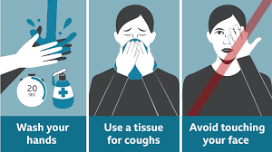

A coronavirus is a kind of common virus that causes an infection in your nose, sinuses, or upper throat. Most coronaviruses aren't dangerous.'
In early 2020, after a December 2019 outbreak in China, the World Health Organization identified SARS-CoV-2 as a new type of coronavirus. The outbreak quickly spread around the world.
COVID-19 is a disease caused by SARS-CoV-2 that can trigger what doctors call a respiratory tract infection. It can affect your upper respiratory tract (sinuses, nose, and throat) or lower respiratory tract (windpipe and lungs).
It spreads the same way other coronaviruses do, mainly through person-to-person contact. Infections range from mild to deadly.
SARS-CoV-2 is one of seven types of coronavirus, including the ones that cause severe diseases like Middle East respiratory syndrome (MERS) and sudden acute respiratory syndrome (SARS). The other coronaviruses cause most of the colds that affect us during the year but aren’t a serious threat for otherwise healthy people.
Is there more than one strain of SARS-CoV-2?
It’s normal for a virus to change, or mutate, as it infects people. A Chinese study of 103 COVID-19 cases suggests the virus that causes it has done just that. They found two strains, which they named L and S. The S type is older, but the L type was more common in early stages of the outbreak. They think one may cause more cases of the disease than the other, but they’re still working on what it all means.

The main symptoms include:
Fever
Coughing
Shortness of breath
Trouble breathing
Fatigue
Chills, sometimes with shaking
Body aches
Headache
Sore throat
Loss of smell or taste
Nausea
Diarrhea
The virus can lead to pneumonia, respiratory failure, septic shock, and death. Many COVID-19 complications may be caused by a condition known as cytokine release syndrome or a cytokine storm. This is when an infection triggers your immune system to flood your bloodstream with inflammatory proteins called cytokines. They can kill tissue and damage your organs. If you notice the following severe symptoms in yourself or a loved one, get medical help right away: Trouble breathing or shortness of breath Ongoing chest pain or pressure New confusion Can’t wake up fully Bluish lips or face Strokes have also been reported in some people who have COVID-19. Remember FAST: Face. Is one side of the person’s face numb or drooping? Is their smile lopsided? Arms. Is one arm weak or numb? If they try to raise both arms, does one arm sag? Speech. Can they speak clearly? Ask them to repeat a sentence. Time. Every minute counts when someone shows signs of a stroke. Call 911 right away. If you’re infected, symptoms can show up in as few as 2 days or as many as 14. It varies from person to person.
According to researchers in China, these were the most common symptoms among people who had COVID-19:
Fever 99%
Fatigue 70%
Cough 59%
Lack of appetite 40%
Body aches 35%
Shortness of breath 31%
Mucus/phlegm 27%
Some people who are hospitalized for COVID-19 have also have dangerous blood clots, including in their legs, lungs, and arteries.

| STATES | CONFIRMED CASES | ACTIVE CASES | RECOVERED | TOTAL TEST |
|---|---|---|---|---|
| MAHARASHTRA | 10,77,374 | 2,91,256 | 7,55,850 | 53.2L |
| ANDHRA PRADESH | 5,83,925 | 92,353 | 4,86,531 | 47.3L |
| TAMIL NADU | 5,14,208 | 46,806 | 4,58,900 | 60.5L |
| KARNATAKA | 4,75,265 | 98,536 | 3,69,229 | 39.2L |
| UTTAR PRADESH | 3,24,036 | 67,335 | 2,52,097 | 77.8L |
| DELHI | 2,25,796 | 29,787 | 1,91,203 | 22.5L |
| WEST BENGAL | 2,05,919 | 23,693 | 1,78,223 | 25.2L |
| BIHAR | 1,61,101 | 13,731 | 1,46,533 | 50.9L |
| TELANGANA | 1,60,571 | 30,400 | 1,29,187 | 22.2L |
| ODISHA | 1,58,650 | 35,928 | 1,22,024 | 25.2L |
| ASSAM | 1,44,166 | 28,629 | 1,15,052 | 27.5L |
| GUJRAT | 1,14,996 | 16,403 | 95,365 | 33.6L |
| KERALA | 1,10,819 | 30,489 | 79,809 | 22L |
| RAJASTHAN | 1,04,138 | 16,726 | 86,162 | 26.7L |
| HARYANA | 96,129 | 20,417 | 74,712 | 15.1L |
| MADHYA PRADESH | 90,730 | 21,228 | 67,711 | 17L |
| PUNJAB | 82,100 | 20,693 | 58,984 | 14.1L |
| CHHATTISGARH | 67,327 | 33,645 | 33,109 | 8.1L |
| JHARKHAND | 62,737 | 14,064 | 48,112 | 14.1L |
| JAMMU AND KASHMIR | 56,654 | 18,678 | 37,062 | 12.7L |
| UTTARAKHAND | 34,407 | 10,739 | 23,085 | 5.4L |
| GOA | 25,511 | 5,102 | 20,094 | 2.3L |
| PUDUCHERRY | 20,601 | 4,674 | 15,522 | 1.1L |
| TRIPURA | 19,715 | 7,561 | 11,925 | 3.4L |
| HIMACHAL PRADESH | 9,923 | 3,658 | 6,167 | 2.5L |
| CHANDIGARH | 8,592 | 2,991 | 5,502 | 55.4K |
| MANIPUR | 7,971 | 1,585 | 6,340 | 2L |
| ARUNACHAL PRADESH | 6,297 | 1,755 | 4,531 | 2.1L |
| NAGALAND | 5,229 | 1,269 | 3,927 | 71K |
| MEGHALAYA | 4,037 | 1,818 | 2,190 | 1.2L |
| LADAKH | 3,419 | 903 | 2,475 | 43.4K |
| SIKKIM | 2,119 | 582 | 1,512 | 45.5K |
| MIZORAM | 1,468 | 545 | 923 | 52.6K |